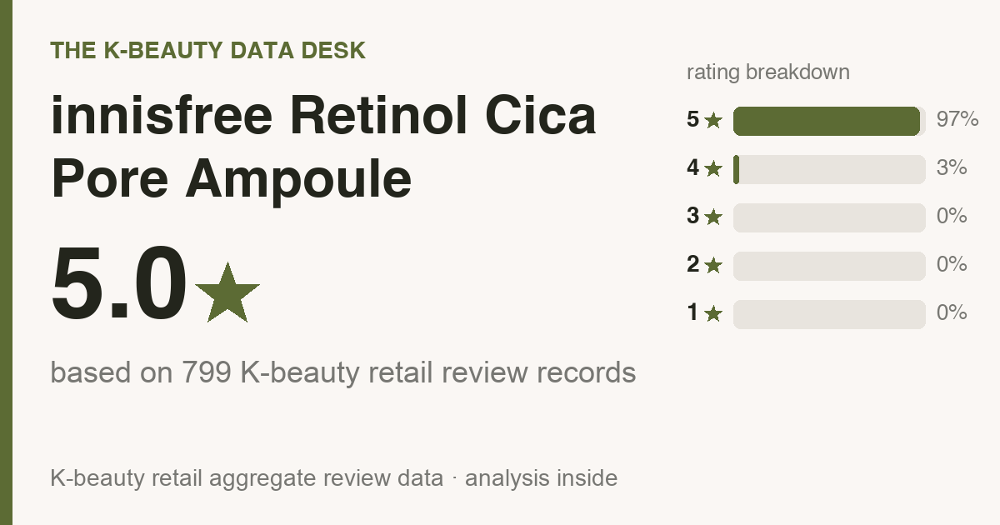
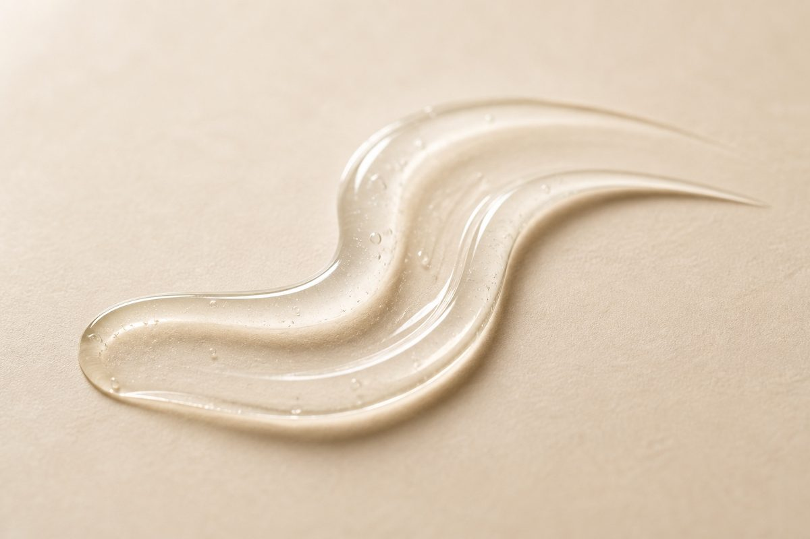
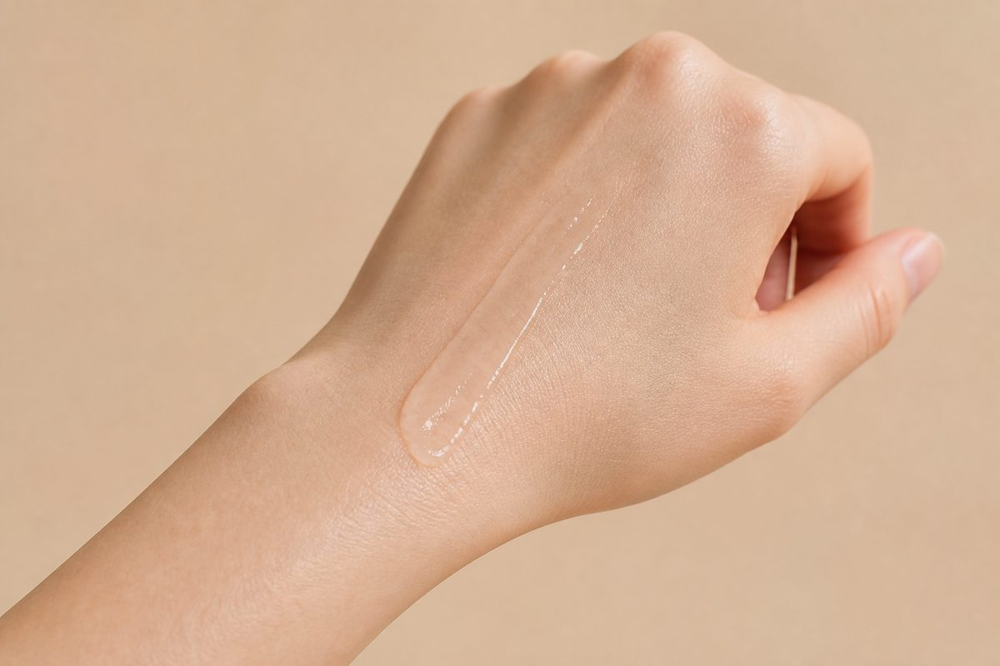

Updated July 2026. I pulled all 799 real Olive Young reviews and read 500 of them line by line, so this is the crowd talking, not me guessing. Every one is a real buyer, and I didn't write, buy, or translate a single review.
One disclosure up front: the store links at the bottom are affiliate links, so a purchase through one may earn me a small commission. Your price stays the same, and it has no effect on the numbers.

The short version: It averages 5.0★ (97% gave it five stars) across 799 Olive Young reviews, and buyers rate it highest for fine lines (43%), soothing redness (35%), hydration (22%). It's a combination skin favorite (full who-should-skip rundown below).

In Korea it runs about ₩26,900 (≈ $19). US retail bounces around, so check the buy links for today's number. Only 1% of reviewers said they bought it again, so most liked it once without feeling any pull to restock. Read that as try-it-if-you're-curious, not a staple. If budget is the tiebreaker, a basic look-of-aging serum covers the essentials for less.
Some context. innisfree Retinol Cica Pore Ampoule sells well on Olive Young (Korea's big beauty retailer, the rough equivalent of Sephora), but search it in English and you get almost nothing useful, maybe a TikTok with no real detail. So I went into what the reviews actually say and pulled out the parts a friend would tell you before you spend money.
The average is 5.0 stars, and it isn't a few loud superfans dragging the number up. 97% of reviewers gave it the full five stars (nearly 9 in 10), and 100% landed at four or five.
Read enough of them and the same notes repeat. People love fine lines and soothing redness.
So what is it actually good at? By the numbers:
Star ratings are the headline. The part that tells you whether to buy sits down in the details, so I went through the 500 most-helpful reviews and tallied what people kept raising. Quick note on the math: the deeper counts in this section come from those 500, while the star ratings and skin-type splits above come from the full review base. What stood out:
Across the 5-star reviews, the notes that come up over and over are zero irritation, fast absorption / fresh finish, no sticky or heavy feel, and hydration & dewiness.
If your skin tends to throw a fit, this outweighs any star rating. Of everyone who mentioned it, 70% said it felt gentle with zero sting, and only 2% reported any irritation at all. That's about as reassuring as this kind of data gets. Your skin is still your skin, though, so patch-test on your jaw for a couple of days before you commit.
The reviewer pool skews combination (59%), dry (26%), oily (15%), so that's whose skin these reviews describe best (it leans combination skin). If that's you, you're reading the most relevant crowd. If it isn't, that doesn't mean it won't work for you, just that fewer reviewers share your skin type, so weight what you read accordingly.
Genuinely worth it for you if:
Nothing works for everyone. If one of these is actually what you're shopping for, here's the category I'd send your money to, with rough US prices so you know the budget going in:
Those are just common starting points, not endorsements. Read their reviews the way I read these before you buy, and match on the job first, price second.
I read the reviews, not the lab sheet, so I can't call this fragrance not verified (I read reviews, not the INCI). The 30-second check that settles it: on the buy page, Ctrl/Cmd-F the ingredient list for "fragrance / parfum" and "alcohol denat." If either shows up and your skin reacts to it, skip. Reviewers called it gentle, but for reactive skin the label is your real answer, not a star rating.
Routine order trips people up, so here's the plain version for this format:

Strong match. 59% of reviewers had combination skin, the single biggest group, so if that's you, the odds are in your favor.
Mostly yes. 70% of reviewers said it felt gentle with no sting. Patch-test if you react easily, but the irritation rate is genuinely low.
Reviewers describe it as fast-absorbing and fresh rather than greasy, so the glow reads more like dewy hydration than a heavy sheen. One honest gap: this is a Korean review base, so it can't tell you how that finish reads on deeper skin tones specifically, and I won't invent a verdict the reviews don't contain. The move instead: press a couple of drops into one cheek, then look at it in daylight AND in a flash selfie before you commit. A dewy formula can read shiny on any tone under a flash, so the only honest answer is to watch how it behaves on your own skin.
Honestly, probably not. Normal skin will like it but won't need it, and if the serum you own already works, this won't change your life. It's a genuinely nice pick if you're starting fresh or replacing something you don't love, but "I already have one that works" is a perfectly good reason to skip.
What matters is whether people come back, not the buzz. 1% said they repurchased, and reviewers most often rate it best for fine lines (43%). The re-buy rate is modest, so the honest read is: it delivers on that one job, it just doesn't inspire frantic restocking.
It's one of the better-reviewed picks in its category, though repeat-buys are modest, so treat it as a try-it, not a staple. Worth it if its top reviewer-voted strengths line up with what your skin actually needs, and you're not buying it for the hyped actives.
I read the reviews, not the ingredient list, so I can't confirm fragrance status. If you're fragrance-sensitive, patch-test on your jaw for 24–48h first.
I don't track other brands' prices, so I won't invent a dupe for you. Compare it against other top-ranked picks in the same category and match on what reviewers say it does best, not just on price.
Amazon is the easiest (it auto-routes to your local store), and Olive Young runs its own US store (us.oliveyoung.com) now too. YesStyle and Stylevana are solid value alternates. Outside the US, Olive Young Global ships to the UK, Canada, Australia, Singapore and more. Links are below.
innisfree Retinol Cica Pore Ampoule is an easy yes for combination skin that wants fine lines and soothing redness. For what it's trying to do, people are clearly happy with it. If that's the lane you're shopping in, and you don't already own a serum you love, it's a confident yes from me.
Not your match? Here are other reviews I built the same way, all the numbers and who-should-skip included:
Disclosure: This article contains affiliate links. If you buy through them, I may earn a small commission at no extra cost to you.
If you're in the US:
Outside the US (UK, Canada, Australia, Singapore, NZ and more):
On prices: the only number I can vouch for is the dated Korea shelf price above (pulled 2026-07-07). Stores reprice constantly and bundles muddy comparisons, so always compare the per-item price at the link before you buy.
← All K-Beauty Data Desk reviews · Best-seller rankings · About & methodology
Published by The K-Beauty Data Desk · Data refreshed 2026-07-07. The reviews are 100% real Olive Young buyers. I read the reviews and made sense of them for you; I never wrote, bought, paid for, or translated any individual review, and I did not test the product on my own skin. I received no free product and am not paid or approved by the brand. Check the source ratings yourself.
Data basis: aggregate statistics from Olive Young Korea, retrieved 2026-07-07. The ratings, review count, star distribution and satisfaction polls are all facts pulled in aggregate. The wording, decoding and recommendations are mine. I never copy or translate individual user reviews.